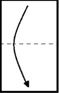
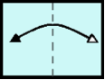
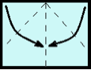
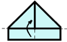
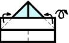
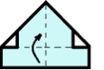
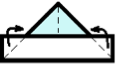

折紙
馬汀依照下面的步驟一至七，用一張一面藍色另一面白色的紙折了頂帽子。
|  |  |  |  |  |  |  |
| 1. 將紙從上至下對折 | 2. 把紙左右對折出折痕後，再展開 | 3. 將上方兩個角落折至中央，讓這兩個角落靠在一起 | 4. 將前方多出來的紙張向上折 | 5. 把兩邊多出來的角落向後折，再把整個半成品翻轉過來 | 6. 將前方多出來的紙張向上折 | 7. 把兩邊多出來的角落向後折 |
接著，馬汀把紙帽子展開，變回一張紙。他仔細觀察這張紙，並回想上面的折痕分別是步驟1至7中哪一步驟所形成的。
馬汀將每個折痕分別標記其對應的步驟編號。請問選項中的哪一張的標記，正確代表各個步驟所造成的折痕？